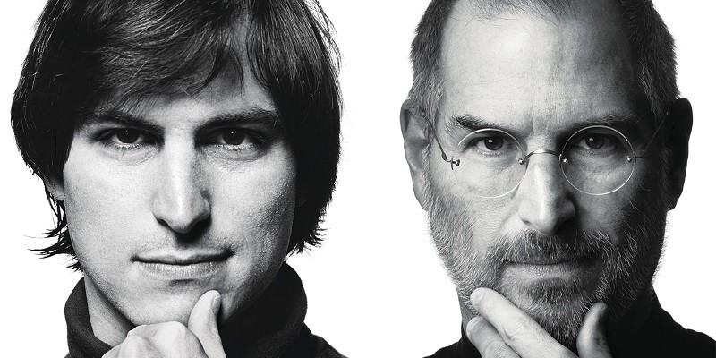

Steve Jobs
Founder of Apple Computer & Pixar Animation Studios

Steve Jobs in 1984 on the left, 2009 on the right.
A brief timeline of the life and legacy of Steve Jobs
- 1955 - Born in San Francisco
- 1973 - Attends and then later leaves Reed College
- 1975 - Along with Steve Wozniak, builds the Apple l Computer
- 1976 - Jobs, Wozniak, and Ron Wayne incorporate Apple Inc.
- 1983 - The original Macintosh is released
- 1985 - Jobs leaves Apple and starts NeXT Computer
- 1986 - Steve Jobs buy Pixar Animation Studios
- 1995 - Pixar's Toy Story is released, and is a major success
- 1996 - Apple buys NeXT Computer for $400M
- 2000 - Steve Jobs returns as CEO of Apple
- 2001 - The first iPod is released
- 2005 - Jobs delivers his memorable Stanford University commencement speech
- 2007 - Steve Jobs unveils the first iPhone
- 2009 - Jobs takes medical leave for 6 months, and has a liver transplant
- 2010 - Jobs unveils the iPad at his final public appearance
- 2011 - Steve Jobs resigns from Apple just months before passing away
"Your work is going to fill a large part of your life, and the only way to be truly satisfied is to do what you believe is great work. And the only way to do great work is to love what you do. If you haven't found it yet, keep looking. Don't settle. As with all matters of the heart, you'll know when you find it."
- Steve Jobs